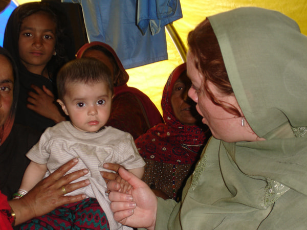

ユース・ウィズ・ア・ミッションのご紹介
ユース・ウィズ・ア・ミッション（通称YWAM,ワイワム）は、超教派の国際的な宣教団体で、大宣教命令の達成のため、３つの柱となる、「伝道・訓練・救済」の働きを行っております。
YWAMには、18,000人のフルタイム・スタッフが世界180ヶ国、1,000余りのベースで活動し、スタッフ全員は、ボランティアとして働いています。日本では、東京、大阪、長野，静岡，鹿児島，沖縄などに拠点を置き、DTS(弟子訓練学校)をはじめとする、各訓練学校、教会開拓、地域教会をサポートする働きなどをさせていただいております。
私達は、神様が御自分の民を「・・・行って、あらゆる国の人々を弟子と、そして、 父、子、聖霊の御名によってバプテスマを授け、また、わたしがあなたに命じて おいたすべてのことを守るように、彼らを教え・・」ることに召しておられると信じます 神様はイエス・キリストの福音を日本の人々にもたらすため、そして、神の栄光と 誉れのために育成し、賜物を与え、様々な方法によって福音をもたらすため、多くの 国々から人々を召しておられます。
ユース・ウィズ・ア・ミッション（YWAM）ジャパンは、26年前大阪にて誕生し、それ以後沖縄から東京と九州へと拡大して来ました。現在、YWAMの本部事務所は東京に設置されています。YWAMジャパンは、主に３つの分野、つまり訓練, 伝道 (教会開拓を含む) 憐みのミニストリーに焦点を当てており、これはまたYWAMインターナショナルにも当てはまります。
